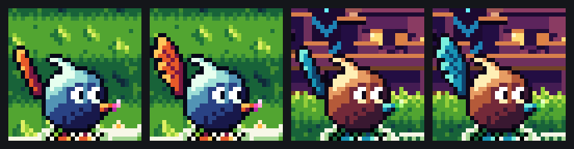
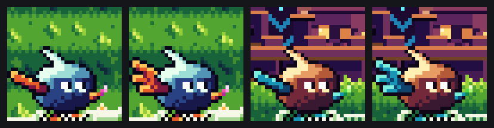
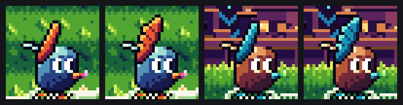
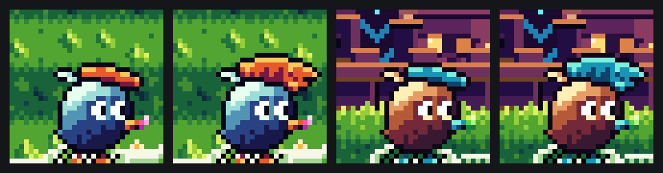
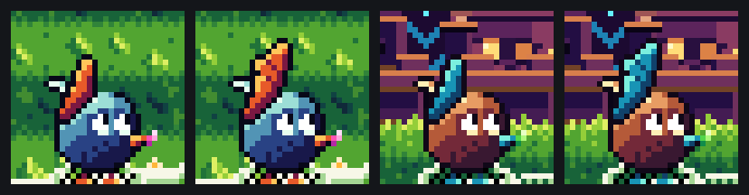
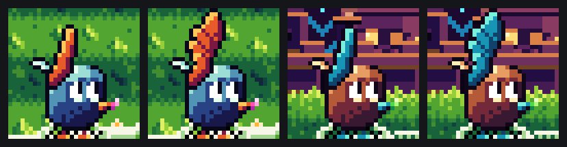
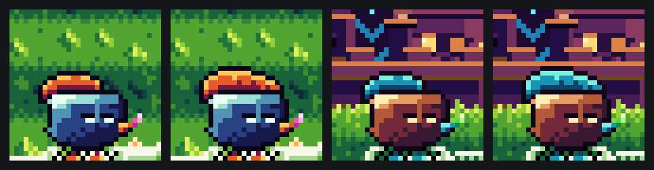
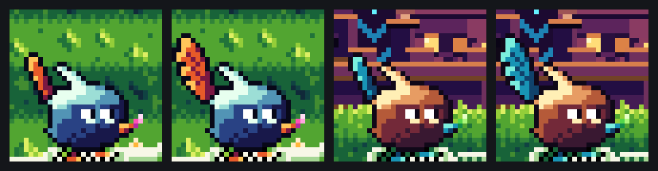
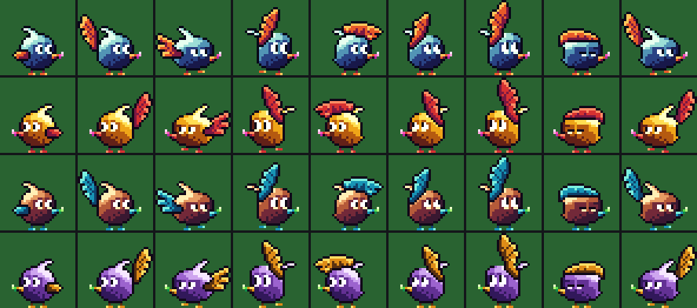

Toss Gum poses, wing pass: broad feathered wing in place of the 3 pixel stick
Draft only, no game code. 32 x 32 cells kept. Body, head, palette letters, frame timing and mirroring are unchanged (checked by the script). Notes: README.md, numbers: numbers.txt.
1. Old wing against new wing, per frame (6x)
Each picture, left to right: old on grass, new on grass (1P palette), old over the city backdrop, new over the city backdrop (CPU1 palette).

Throw windup A (carry pose)

Throw windup B (cocked back)

Throw release A

Throw release B (follow through)

Catch reach A

Catch reach B (full stretch)

Catch absorb (wing folded over the head)

Catch recoil
2. Pose sheet (3x)

Column 1: the game's idle frame. Then throw windup A, windup B, release A, release B, catch reach A, reach B, absorb, recoil. Rows: 1P, 2P gold (mirrored), CPU1, CPU2 violet (mirrored).